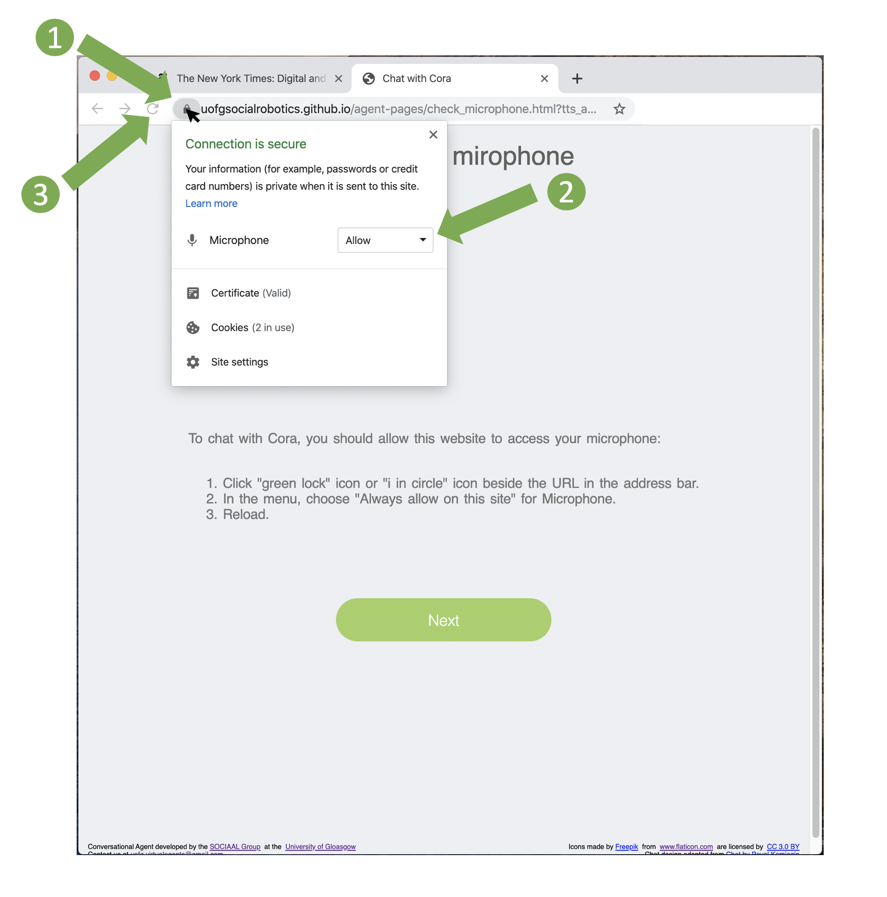

It looks like our server is not connected.
We apologize for the inconvenience.
Feel free to contact us at uofg.virtualagents@gmail.com.
Feel free to contact us at uofg.virtualagents@gmail.com.
To chat with Cora, you should allow this website to access your microphone.
With the Chrome browser:

- Click the "green lock" icon or the "i in circle" icon beside the URL in the address bar.
- In the menu, choose "Always allow on this site" for Microphone.
- Refresh the page.
We strongly recommend that you use Chrome for this study.
If you have Chrome installed, you can switch browsers now by opening Chrome and copying this address address_here in the address bar.
If for any reason you cannot or do not wish to use Chrome, we cannot guarantee the quality of your experience.
You can search for instructions on the web to authorize the microphone or alternatively continue without the microphone.
If you have Chrome installed, you can switch browsers now by opening Chrome and copying this address address_here in the address bar.
If for any reason you cannot or do not wish to use Chrome, we cannot guarantee the quality of your experience.
You can search for instructions on the web to authorize the microphone or alternatively continue without the microphone.
If you cannot find how to allow this website to access your microphone:
You can still proceed (click "OK" when asked if you are ready to continue), but your browser will require you to confirm that you authorize this website to access your microphone each time you will click on the microphone button.
If you don't have a microphone:
You can still proceed (click "OK" when asked if you are ready to continue) and type what you want to say to Cora.
Next